Получение навыков настройки службы DHCP на сетевом оборудовании для
распределения адресов IPv4 и IPv6.
Задание
Настроить DHCP в случае IPv4.
Настроить DHCP в случае IPv6.
Выполнение лабораторной работы
Настройка DHCP в случае IPv4
Настройка DHCP в случае IPv4
Запускаем GNS3 VM и GNS3. Создаем новый проект, называем его
lab5.
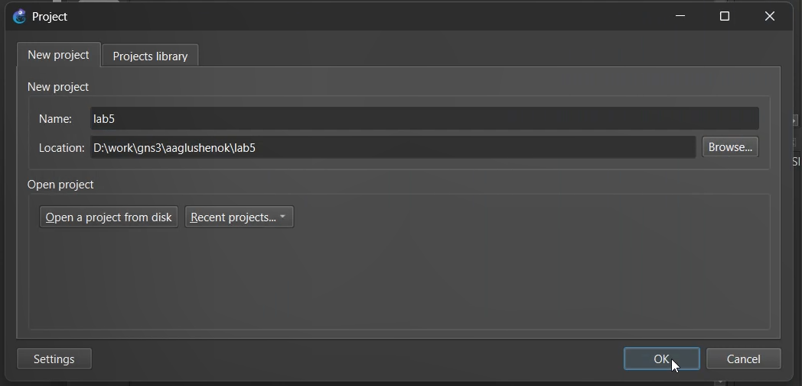
Figure 1: создание проекта
Настройка DHCP в случае IPv4
В рабочем пространстве размещаем и соединяем устройства в
соответствии с первой топологией.
Меняем отображаемые названия устройств.
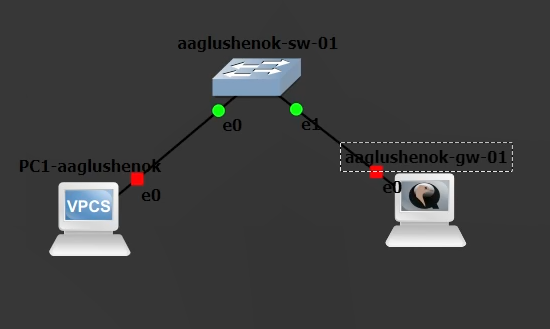
Figure 2: построение
топологии
Настройка DHCP в случае IPv4
Включаем захват трафика на соединении между коммутатором и
маршрутизатором.
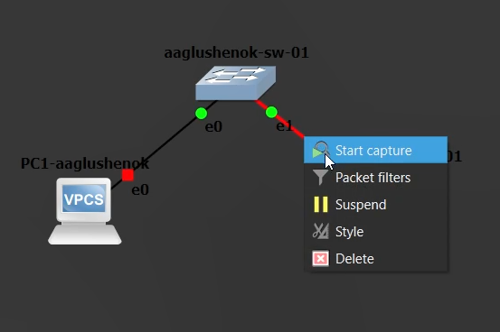
Figure 3: включение захвата
трафика
Настройка DHCP в случае IPv4
Открываем консоль маршрутизатора.
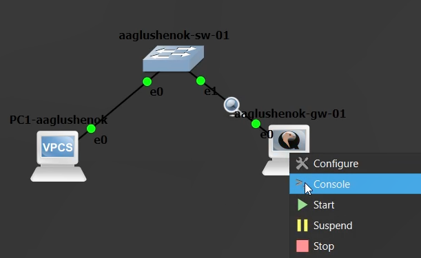
Figure 4: открытие консоли
маршрутизатора
Настройка DHCP в случае IPv4
Меняем имя устройства, доменное имя и имя системного
пользователя.
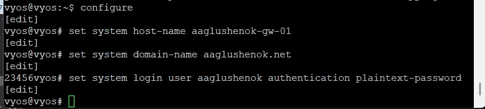
Figure 5: смена имени устройства и
доменного имени
Настройка DHCP в случае IPv4
Отключаем dhcp для eth0.
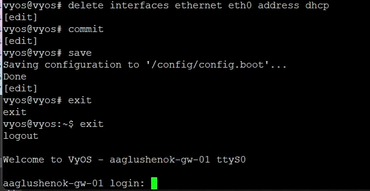
Figure 6: отключение dhcp для
eth0
Настройка DHCP в случае IPv4
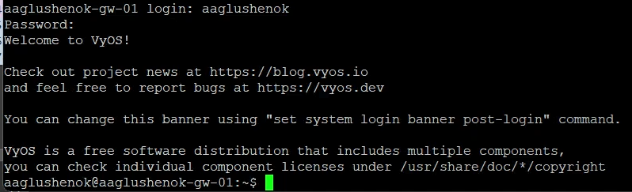
Figure 7: ввод логина и
пароля
Настройка DHCP в случае IPv4
Сохраняем конфигурации.
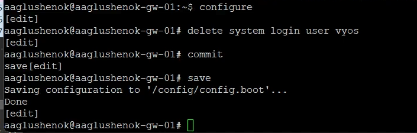
Figure 8: сохранение
конфигураций
Настройка DHCP в случае IPv4
На маршрутизаторе под созданным пользователем настраиваем адресацию
IPv4.
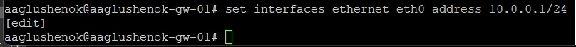
Figure 9: настройка адресации
IPv4
Настройка DHCP в случае IPv4
Добавляем конфигурацию DHCP-сервера на маршрутизаторе: создаем
разделяемую сеть, подсеть с адресом 10.0.0.0/24, задаем диапазон
адресов.
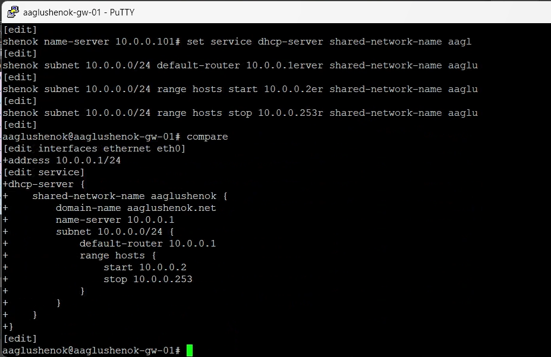
Figure 10: добавление конфигурации
DHCP-сервера
Настройка DHCP в случае IPv4
Сохраняем конфигурации.
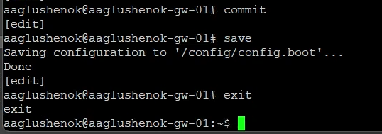
Figure 11: сохранение
конфигураций
Настройка DHCP в случае IPv4
Просматриваем статистику DHCP-сервера и выданные адреса.
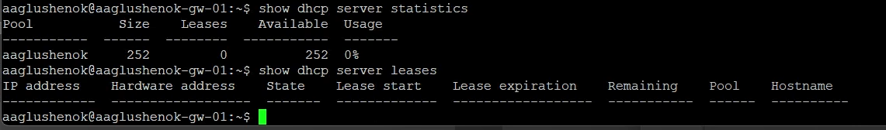
Figure 12: просмотр статистики
DHCP-сервера
Настройка DHCP в случае IPv4
Настраиваем оконечное устройство PC1. Сначала открываем консоль
PC1.
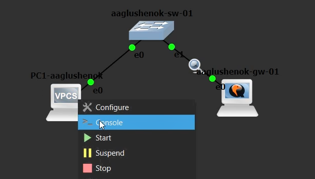
Figure 13: открытие консоли
PC1
Настройка DHCP в случае IPv4
Далее вносим изменения в конфигурации PC1.
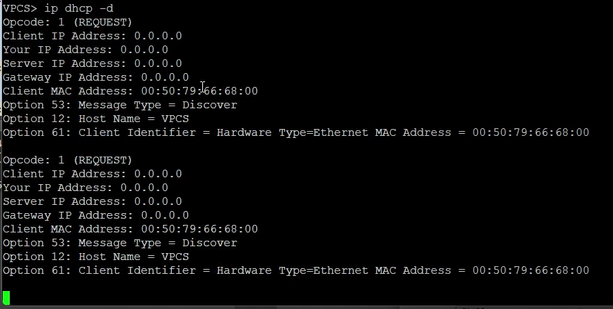
Figure 14: настройка PC1
Настройка DHCP в случае IPv4
Затем сохраняем конфигурации.
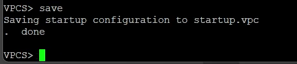
Figure 15: сохранение
конфигураций
Пояснение к полученной на экране PC1 информации:
Видим, что PC1 успешно отправил широковещательный запрос DHCP Discover
на поиск DHCP-сервера. Запрос содержит MAC-адрес и имя устройства. Так
как это только начальная стадия получения адреса, сам IP-адрес еще не
получен (все адресные поля равны 0.0.0.0).
Настройка DHCP в случае IPv4
Проверяем конфигурацию IPv4 на узле, пингуем маршрутизатор.
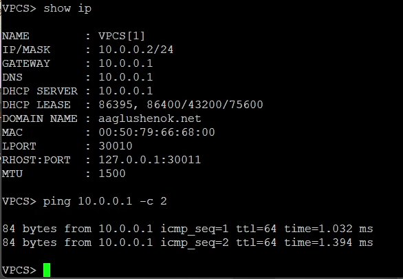
Figure 16: проверка конфигурации IPv4,
пингование
Настройка DHCP в случае IPv4
На маршрутизаторе вновь просматриваем статистику DHCP-сервера и
выданные адреса.
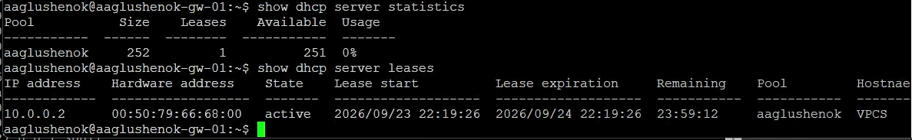
Figure 17: просмотр статистики
DHCP-сервера
Пояснение к полученной информации: Видим, что после
включения клиента PC1 статистика изменилась: счетчик Leases вырос с 0 до
1, а Available уменьшился с 252 до 251, при этом в таблице аренд
появилась активная запись для IP 10.0.0.2 с MAC-адресом клиента и сроком
аренды на 24 часа. Это произошло потому, что виртуальный ПК успешно
отправил DHCP-запрос, и сервер выделил ему первый свободный адрес из
настроенного пула, зарезервировав его за устройством на заданное
время.
Настройка DHCP в случае IPv4
На маршрутизаторе просматриваем журнал работы DHCP-сервера: записи
подтверждают, что служба DHCP успешно запустилась и обновила файл аренд,
а также что сервер корректно проигнорировал запросы на интерфейсах eth1
и eth2 из-за отсутствия на них настроенных IPv4-подсетей.
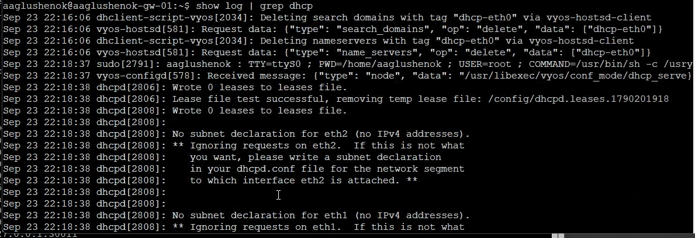
Figure 18: просмотр журнала работы
DHCP-сервера
Настройка DHCP в случае IPv4
Анализируем захваченные анализатором трафика пакеты, относящиеся к
работе DHCP и назначению адреса устройству: захваченный трафик наглядно
демонстрирует стандартный процесс аренды адреса по протоколу DHCP
(Discover -> Offer -> Request -> ACK), в результате которого
устройству PC1 был успешно назначен IP-адрес 10.0.0.2.
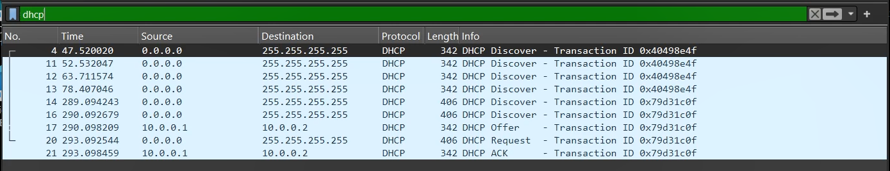
Figure 19: просмотр пакетов
DHCP
Настройка DHCP в случае IPv6
Настройка DHCP в случае IPv6
Дополняем сеть в соответствии со второй топологией.
Меняем отображаемые названия устройств.
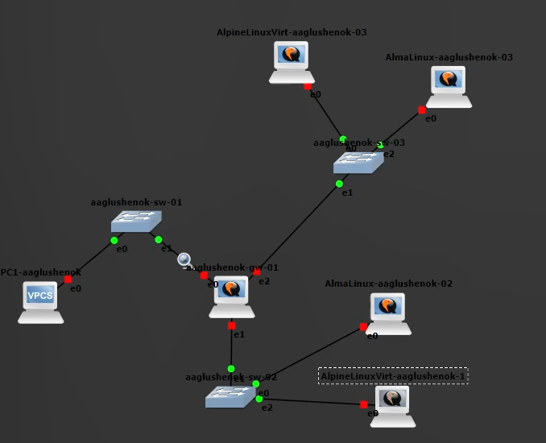
Figure 20: построение
топологии
Настройка DHCP в случае IPv6
Сначала включаем захват трафика на соединениях между маршрутизатором
и коммутором sw-03.
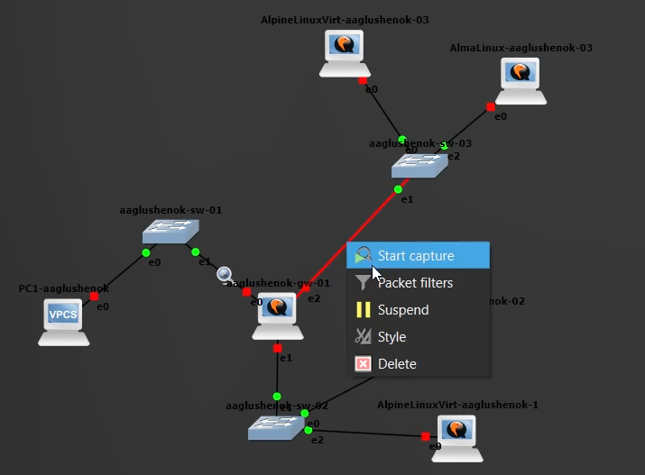
Figure 21: включение захвата трафика
между gw-01 и sw-03
Настройка DHCP в случае IPv6
Затем включаем захват трафика на соединениях между маршрутизатором и
коммутором sw-02.
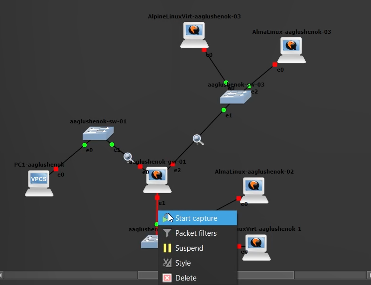
Figure 22: включение захвата трафика
между gw-01 и sw-02
Настройка DHCP в случае IPv6
Настраиваем адресацию IPv6 на маршрутизаторе. Сначала открываем
консоль маршрутизатора.
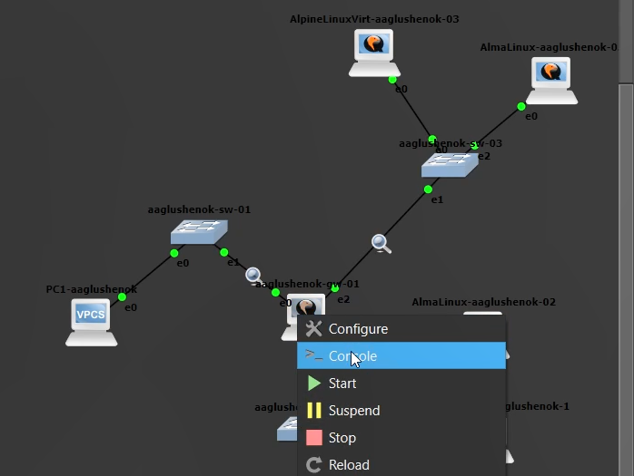
Figure 23: открытие консоли
маршрутизатора
Настройка DHCP в случае IPv6
Далее настраиваем адресацию IPv6.
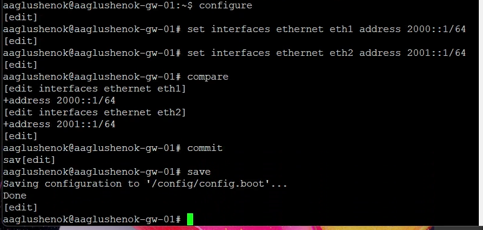
Figure 24: настройка адресации
IPv6
Настройка DHCP в случае IPv6
Затем просматриваем текущее состояние интерфейсов и сохраняем
изменения.
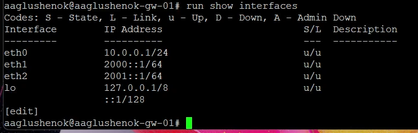
Figure 25: просмотр текущего состояния
интерфейсов
Настройка DHCP в случае IPv6
На маршрутизаторе настраиваем DHCPv6 без отслеживания состояния:
сначала настраиваем объявление о маршрутизаторах на интерфейсе
eth1.
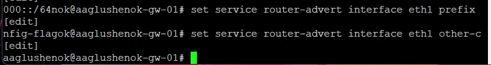
Figure 26: настройка объявления о
маршрутизаторах на интерфейсе eth1
Настройка DHCP в случае IPv6
Далее добавляем конфигурации DHCP-сервера.
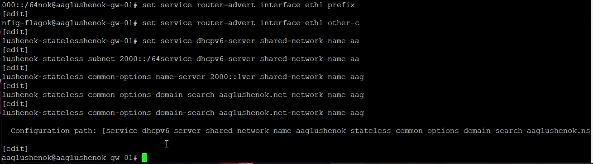
Figure 27: добавление конфигурации
DHCP-сервера
Настройка DHCP в случае IPv6
Далее проверяем внесенные изменения и сохраняем их.
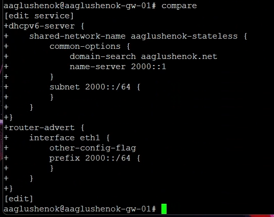
Figure 28: проверка внесенных
изменений
Настройка DHCP в случае IPv6
Затем просматриваем итоговую конфигурацию.
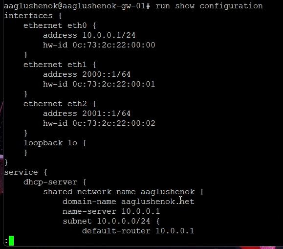
Figure 29: просмотр итоговой
конфигурации
Настройка DHCP в случае IPv6
На узлах AlmaLinux и AlpineLinuxVirt PC2 проверяем настройки сети.
Сначала открываем консоль для AlmaLinux.
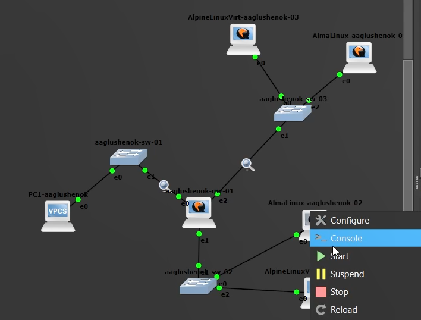
Figure 30: открытие консоли для
AlmaLinux
Настройка DHCP в случае IPv6
Далее открываем консоль для AlpineLinuxVirt.
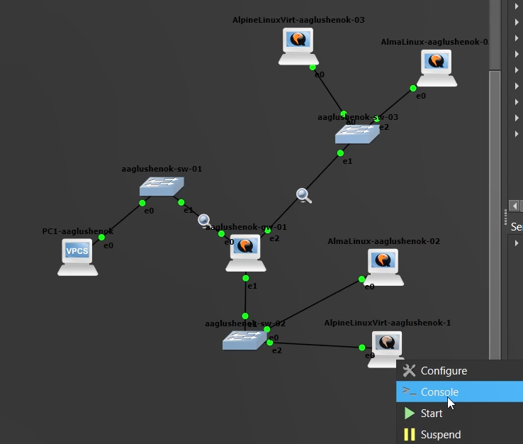
Figure 31: открытие консоли для
AlpineLinuxVirt
Настройка DHCP в случае IPv6
Далее проверяем настройки сети для AlmaLinux.
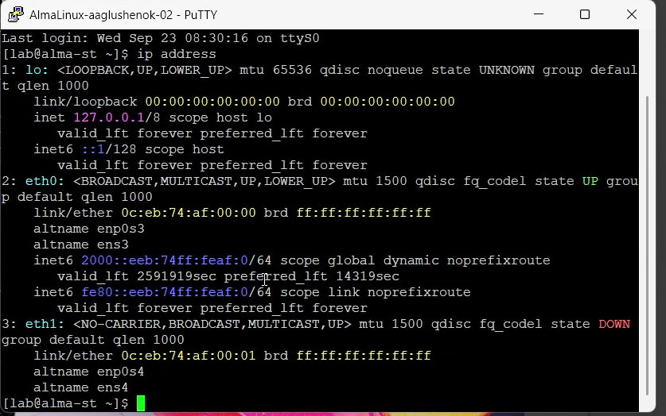
Figure 32: проверка настроек сети для
AlmaLinux
Настройка DHCP в случае IPv6
Продолжаем проверку настроек.
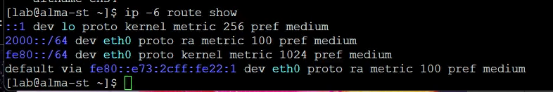
Figure 33: проверка настроек сети для
AlmaLinux
Настройка DHCP в случае IPv6
Затем проверяем настройки сети для AlpineLinuxVirt.
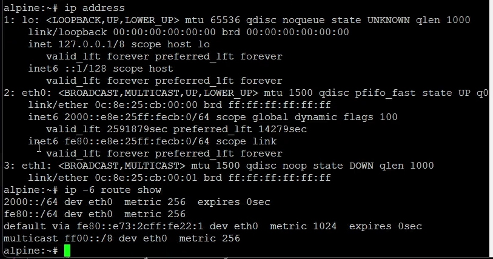
Figure 34: проверка настроек сети для
AlpineLinuxVirt
Настройка DHCP в случае IPv6
На узлах AlmaLinux и AlpineLinuxVirt PC2 пингуем маршрутизатор.
Сначала для AlmaLinux.
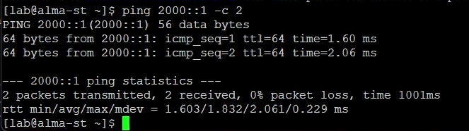
Figure 35: пингование маршрутизатора для
AlmaLinux
Настройка DHCP в случае IPv6
Затем для AlpineLinuxVirt.
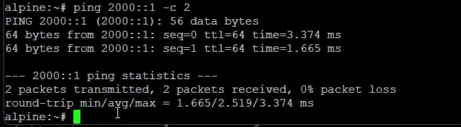
Figure 36: пингование маршрутизатора для
AlpineLinuxVirt
Настройка DHCP в случае IPv6
На узлах AlmaLinux и AlpineLinuxVirt PC2 проверяем настройки DNS.
Сначала для AlmaLinux.
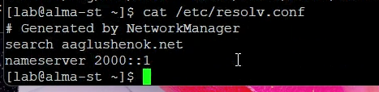
Figure 37: проверка настроек DNS для
AlmaLinux
Настройка DHCP в случае IPv6
Затем для AlpineLinuxVirt.
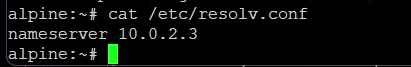
Figure 38: проверка настроек DNS для
AlpineLinuxVirt
Настройка DHCP в случае IPv6
На маршрутизаторе смотрим, выдается ли статистика DHCP-сервера и
выданные адреса. Видим, что команда выполнилась и выдала статистику
(сервис DHCPv6 уже поднят для stateless-сети), но список аренд пустой,
так как, для первой сети: настроен режим без выдачи
адресов (Stateless), а для второй сети: сервер выдачи
адресов (Stateful) еще не настроен, и клиент PC3 пока не отправлял
запрос.
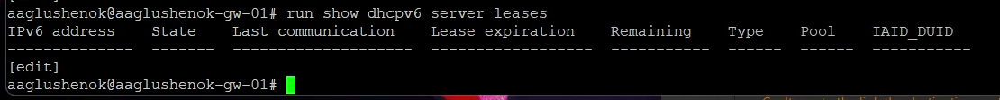
Figure 39: просмотр статистики
DHCP-сервера
Настройка DHCP в случае IPv6
На маршрутизаторе настраиваем DHCPv6 с отслеживанием состояния:
настраиваем объявления о маршрутизаторах, добавляем конфигурацию
DHCP-сервера на маршрутизаторе.
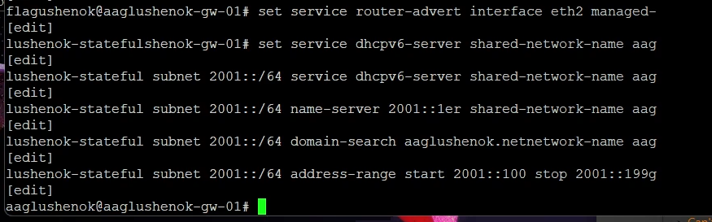
Figure 40: настройка DHCPv6 с
отслеживанием состояния
Настройка DHCP в случае IPv6
Проверяем внесенные изменения и сохраняем их.
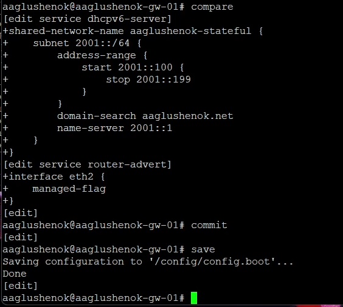
Figure 41: проверка внесенных
изменений
Настройка DHCP в случае IPv6
На маршрутизаторе смотрим статистику DHCP-сервера и выданные адреса:
видим, что в таблице появились две активные аренды (2001::193 и
2001::199).
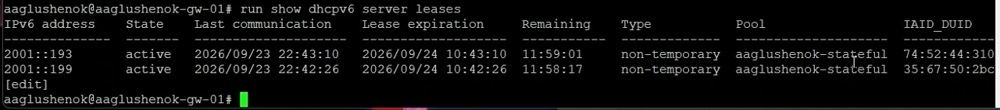
Figure 42: просмотр статистики
DHCP-сервера
Настройка DHCP в случае IPv6
Подключаемся к узлу PC3 и проверяем настройки сети.
На узлах AlmaLinux и AlpineLinuxVirt PC3 проверяем настройки
DNS.
Сначала для AlmaLinux.
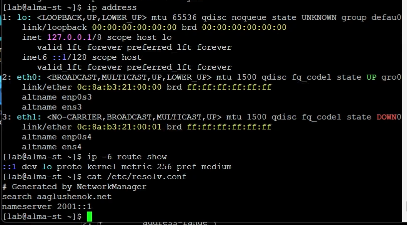
Figure 43: проверка настроек сети
AlmaLinux
Настройка DHCP в случае IPv6
Затем для AlpineLinuxVirt.
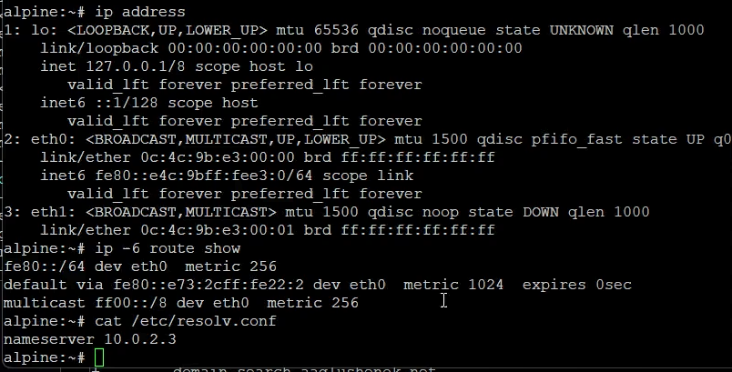
Figure 44: проверка настроек сети для
AlpineLinuxVirt
Настройка DHCP в случае IPv6
На узле AlpineLinuxVirt PC3 получаем адрес по DHCPv6.
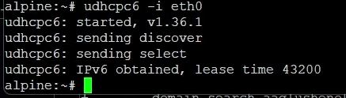
Figure 45: получение адреса по
DHCPv6
Настройка DHCP в случае IPv6
Вновь на узлах AlmaLinux и AlpineLinuxVirt PC3 проверяем настройки
сети.
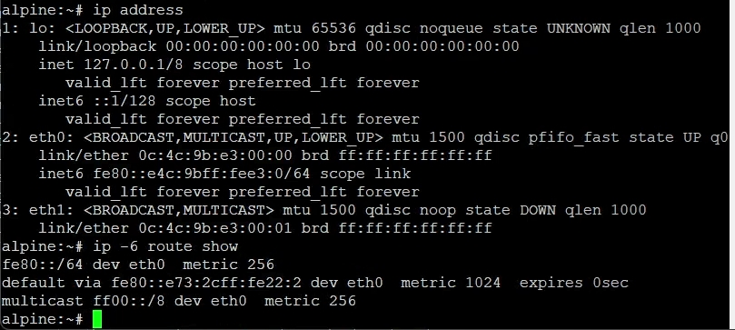
Figure 46: проверка настроек
сети
Настройка DHCP в случае IPv6
Далее пингуем маршрутизатор.
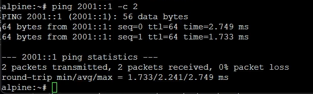
Figure 47: пингование
маршрутизатора
Настройка DHCP в случае IPv6
Затем проверяем настройки DNS.
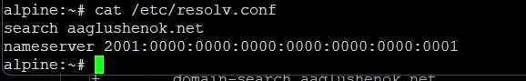
Figure 48: проверка настроек
DNS
Настройка DHCP в случае IPv6
На маршрутизаторе смотрим статистику DHCP-сервера и выданные адреса:
видим, что в таблице появились три активные аренды (2001::190, 2001::193
и 2001::199).
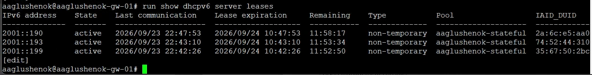
Figure 49: просмотр статистики
DHCP-сервера
Настройка DHCP в случае IPv6
Анализируем захваченные анализатором трафика пакеты, относящиеся к
работе DHCPv6 и назначению адреса устройству. Видим последовательность
Solicit → Advertise → Request → Reply (и Information-request/Reply),
подтверждающую работу DHCPv6 с отслеживанием состояния.
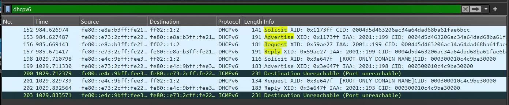
Figure 50: просмотр пакетов
DHCPv6
Выводы
Выводы
В ходе выполнения лабораторной работы № 5 мне удалось получить навыки
настройки службы DHCP на сетевом оборудовании для распределения адресов
IPv4 и IPv6.